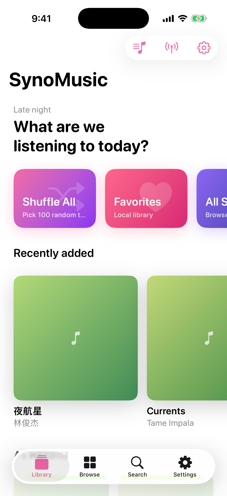
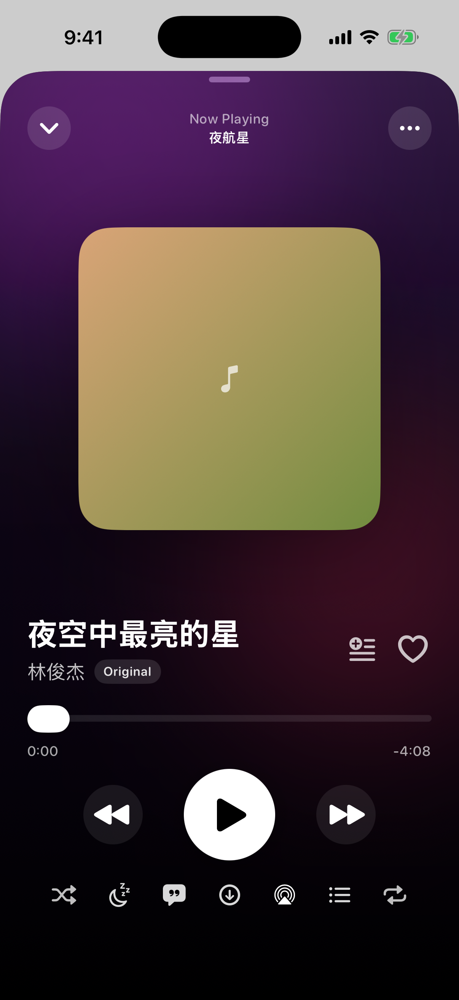
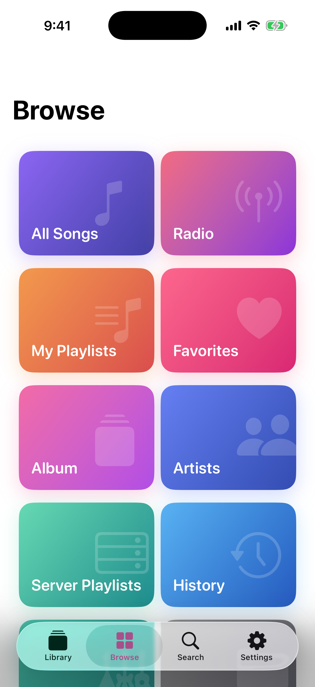
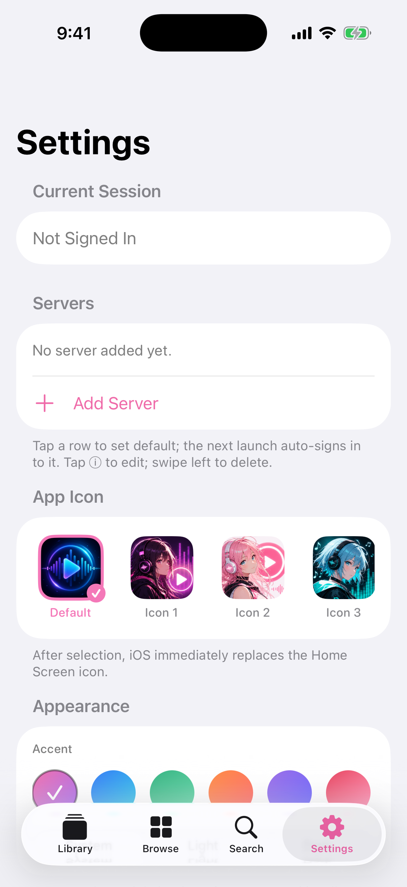
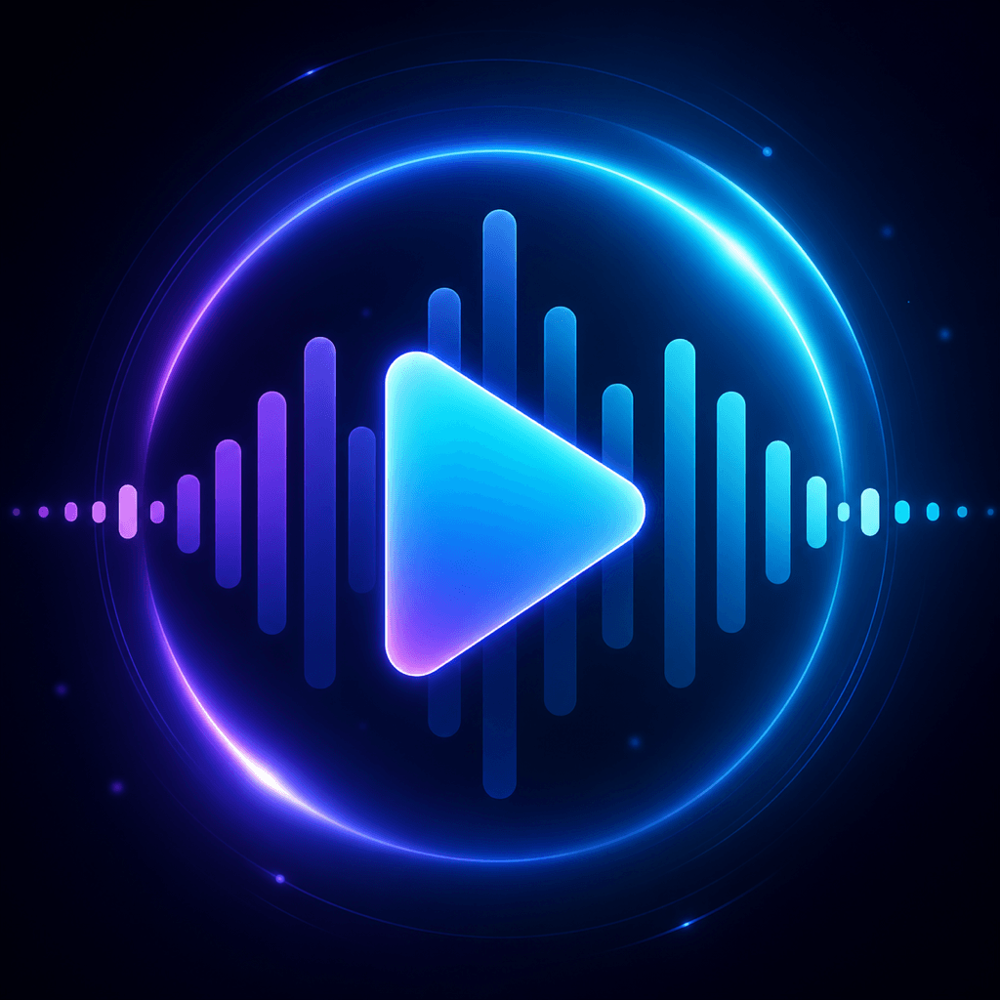

Library first
Browse albums, artists, genres, folders, server playlists and every song with fast native navigation.
Native iOS client for Synology Audio Station
Stream your NAS library with a polished player, synced lyrics, offline downloads, QuickConnect, Lock Screen controls and Dynamic Island support.


Built for your own library
SynoMusic keeps the NAS at the center: credentials stay in Keychain, playback uses native iOS media controls, and your albums, artists, playlists and folders stay reachable without forcing a cloud subscription.
What it handles
Browse albums, artists, genres, folders, server playlists and every song with fast native navigation.
AVQueuePlayer, AirPlay, Lock Screen controls, Dynamic Island and automatic format fallback when original streams fail.
Read synced lyrics, tune font size, offset and follow mode, or fetch lyrics online when the NAS has none.
Download songs into the app sandbox and manage cached tracks from Settings.
Use HTTPS, local hosts, DDNS or QuickConnect with saved profiles and Keychain credentials.
Screens that feel at home on iOS


Private by design
SynoMusic is an unofficial Audio Station client. It connects to your DSM account, stores passwords in iOS Keychain and keeps downloads inside the app sandbox.

Latest release
Download the latest unsigned IPA from GitHub, self-sign it with your preferred tool, or build from source with XcodeGen.